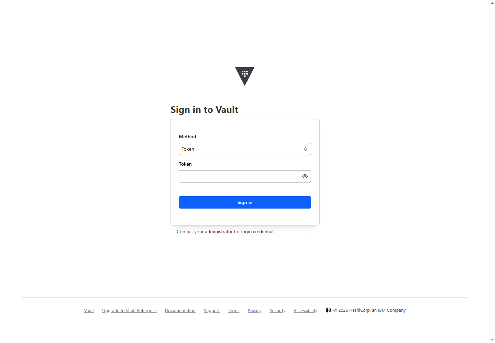
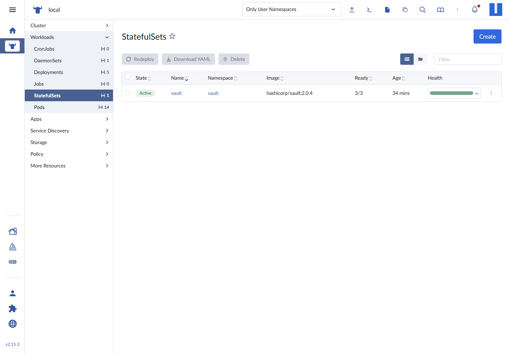
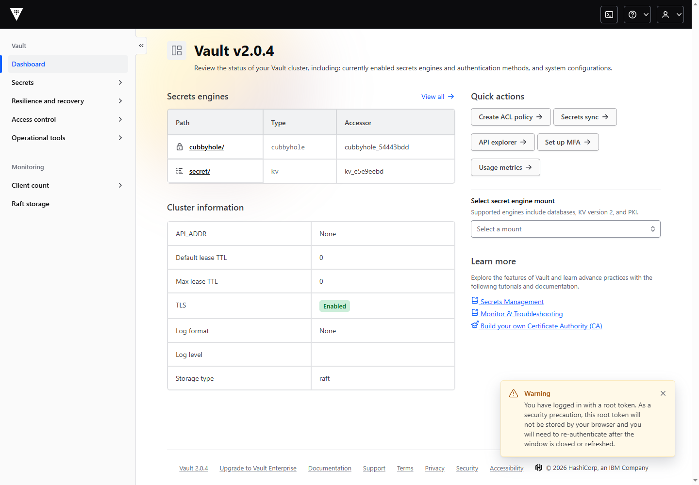
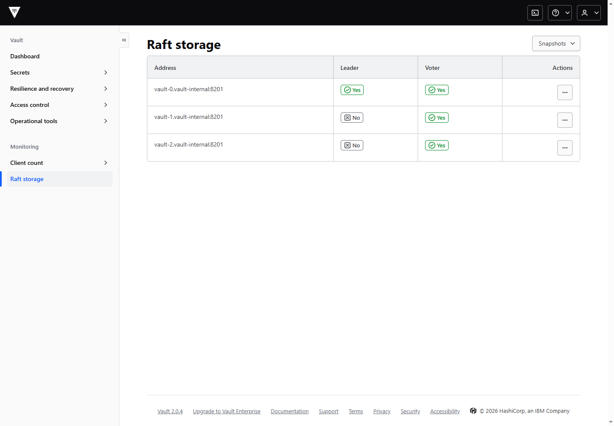
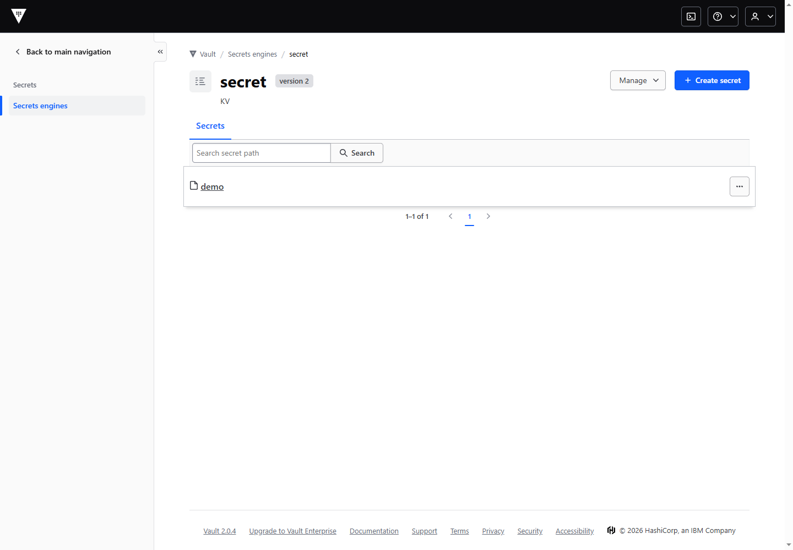
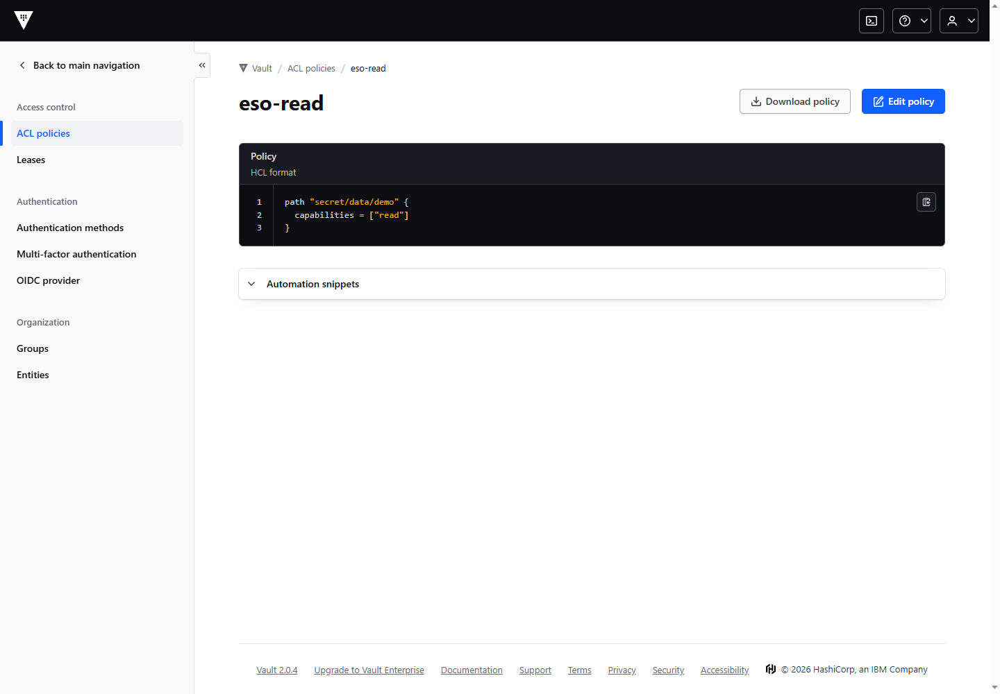
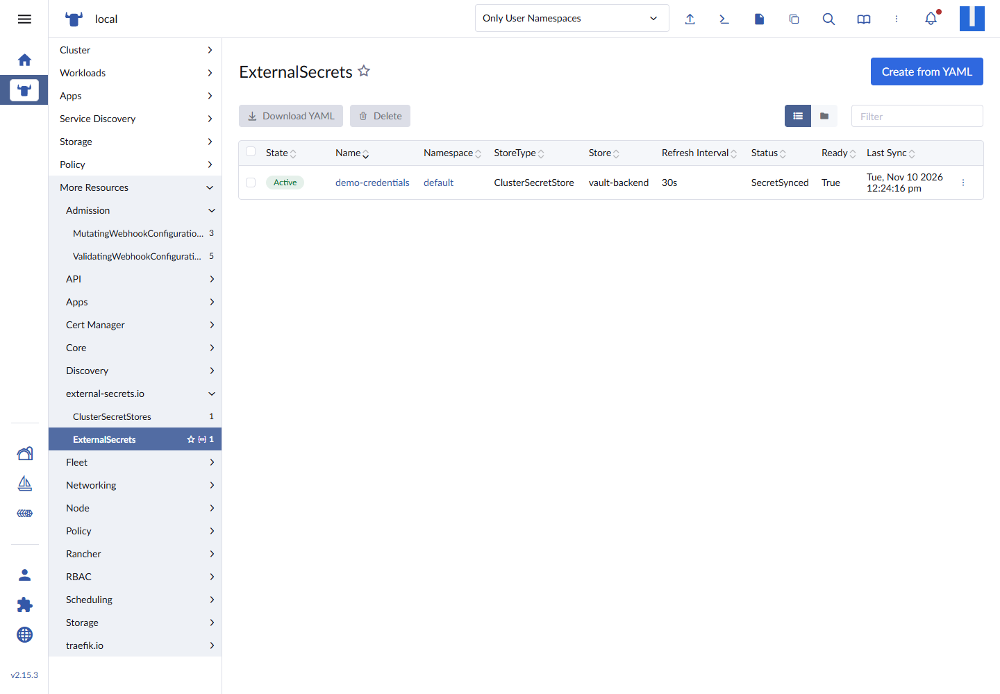
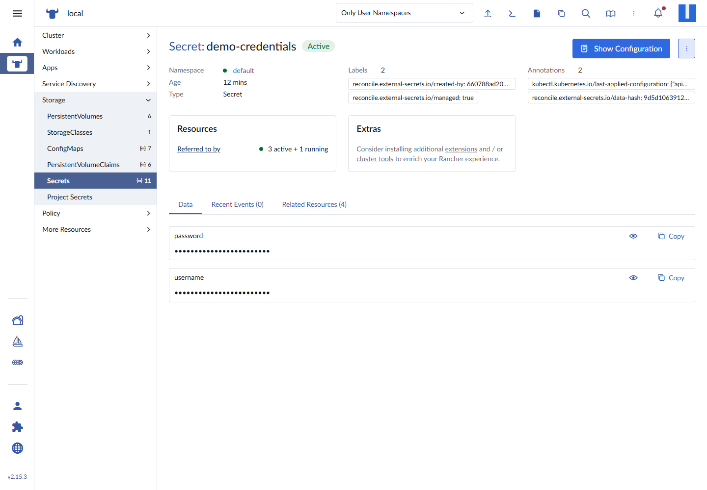
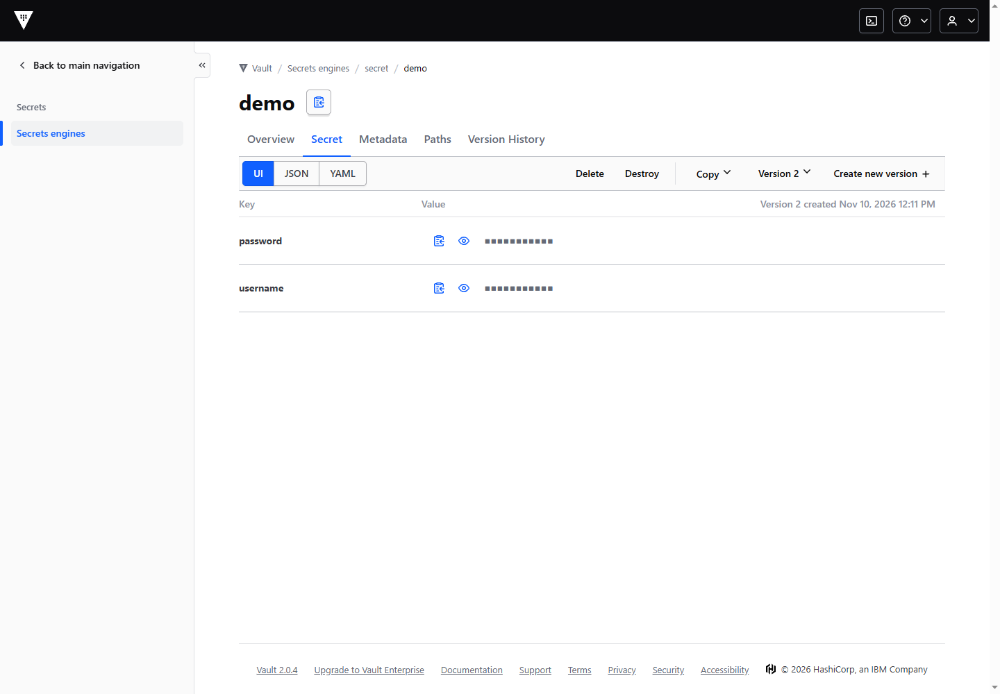
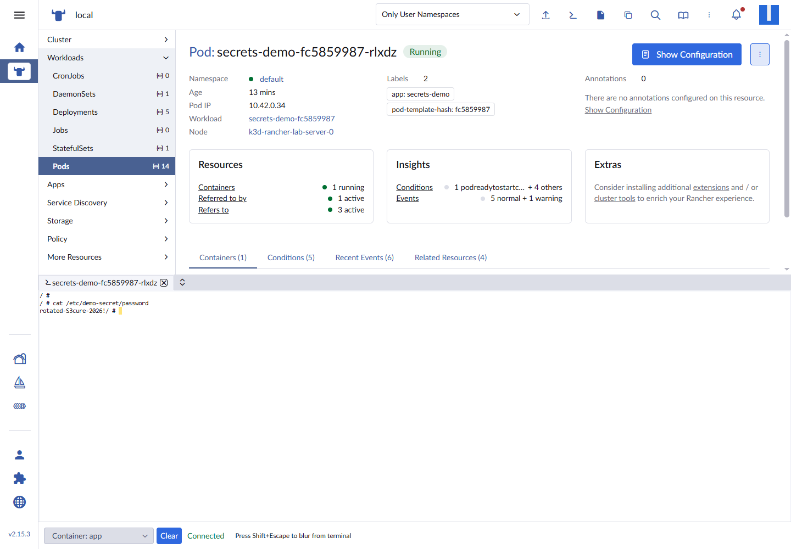

A Kubernetes Secret is convenient, but it is not a secret manager. It is base64-encoded data in etcd, readable by anyone with the right RBAC, and usually duplicated across namespaces and clusters.
HashiCorp Vault gives you a central system of record with policies, audit logging, leases, rotation, and a real security boundary. The External Secrets Operator (ESO) closes the last mile: it authenticates to Vault, reads only the paths a workload is allowed to read, and materializes the result as a native Kubernetes Secret.
This is the setup I actually deployed on my Windows k3d lab: one control plane, three workers, three Vault nodes, TLS end to end, Raft HA, audit logging, least-privilege Kubernetes auth, and a live rotation test. It is not a copy-paste “Vault dev server” tutorial.

What we are building
- A 4-node k3d cluster: 1 server and 3 agents, running k3s
v1.36.5+k3s1 - Rancher
2.15.3and Traefik3.7.17already managing the lab - cert-manager
1.21.3issuing an internal CA and a Vault server certificate - Vault chart
0.34.1, running Vault2.0.4 - Three Vault pods, each with its own Raft data volume and audit volume
- Vault Kubernetes auth scoped to the ESO service account, namespace, and audience
- External Secrets Operator
2.14.0 - A demo workload that receives the secret as a mounted file and sees a rotation without restarting
How the secrets flow
Traefik terminates TLS on the host and re-encrypts traffic to the vault-active Service, which points at the Raft leader. Vault runs three pods with a quorum of two, so one standby can disappear without losing the cluster. External Secrets Operator authenticates to Vault through the vault-active Service and writes the result into a native Kubernetes Secret named demo-credentials, which the secrets-demo pod reads as a mounted file.
The trust chain matters more than the service topology:
- ESO asks Kubernetes for a short-lived service account token with audience
vault. - Vault verifies that token with the Kubernetes TokenReview API.
- Vault checks the service account name, namespace, and audience against the
esorole. - Vault issues an ESO token with only the
eso-readpolicy. - ESO reads
secret/data/demoand writes a native KubernetesSecret. - The workload consumes the mounted file, not a hard-coded value.
Prerequisites
This article assumes the lab from my previous post:
- Windows 10/11 with WSL2 and Docker Desktop
- k3d cluster named
rancher-lab kubectlpointed at thek3d-rancher-labcontext- Helm, cert-manager, Rancher, and Traefik already installed
vaultCLI available in WSL for the API operations
Confirm the cluster before adding security infrastructure:
kubectl config current-context
kubectl get nodes -o wide
NAME STATUS ROLES AGE VERSION
k3d-rancher-lab-agent-0 Ready <none> 21h v1.36.5+k3s1
k3d-rancher-lab-agent-1 Ready <none> 21h v1.36.5+k3s1
k3d-rancher-lab-agent-2 Ready <none> 21h v1.36.5+k3s1
k3d-rancher-lab-server-0 Ready control-plane 21h v1.36.5+k3s1

Step 1 — Create a private CA and a Vault certificate
Do not run Vault over plain HTTP just because the cluster is local. TLS is part of the security model, and the Raft peer traffic should be authenticated too.
I used cert-manager with a lab root CA. This is an internal CA, so it is appropriate for a homelab. In a real environment, use your organization’s PKI or a publicly trusted issuer.
# pki-issuer.yaml
apiVersion: cert-manager.io/v1
kind: ClusterIssuer
metadata:
name: lab-selfsigned
spec:
selfSigned: {}
---
apiVersion: cert-manager.io/v1
kind: Certificate
metadata:
name: lab-root-ca
namespace: cert-manager
spec:
isCA: true
commonName: lab-root-ca
secretName: lab-root-ca
duration: 87600h
privateKey:
algorithm: ECDSA
size: 256
issuerRef:
name: lab-selfsigned
kind: ClusterIssuer
---
apiVersion: cert-manager.io/v1
kind: ClusterIssuer
metadata:
name: lab-ca
spec:
ca:
secretName: lab-root-ca
Apply the issuer, then create the Vault namespace and certificate:
kubectl apply -f pki-issuer.yaml
kubectl create namespace vault
kubectl -n cert-manager wait --for=condition=Ready certificate/lab-root-ca --timeout=120s
# pki-vault-cert.yaml
apiVersion: cert-manager.io/v1
kind: Certificate
metadata:
name: vault-server-tls
namespace: vault
spec:
secretName: vault-server-tls
duration: 8760h
renewBefore: 720h
commonName: vault.vault.svc
privateKey:
algorithm: RSA
size: 2048
issuerRef:
name: lab-ca
kind: ClusterIssuer
ipAddresses:
- 127.0.0.1
dnsNames:
- vault
- vault.vault
- vault.vault.svc
- vault.vault.svc.cluster.local
- vault-active.vault.svc
- vault-active.vault.svc.cluster.local
- vault-standby.vault.svc
- vault-standby.vault.svc.cluster.local
- vault.127.0.0.1.nip.io
- vault-0.vault-internal
- vault-1.vault-internal
- vault-2.vault-internal
kubectl apply -f pki-vault-cert.yaml
kubectl -n vault wait --for=condition=Ready certificate/vault-server-tls --timeout=120s
Every name used by the API, the active/standby services, the ingress, and the Raft peers must be in the SAN list. A certificate that only contains vault.vault.svc will break the moment Traefik connects through vault-active or a peer connects through vault-1.vault-internal.
Step 2 — Create a Traefik transport for re-encryption
Traefik terminates the browser’s TLS connection. Vault is also serving TLS on port 8200. That means Traefik must open a second TLS connection to Vault and verify the Vault certificate.
Create this ServersTransport before installing Vault:
# servers-transport.yaml
apiVersion: traefik.io/v1alpha1
kind: ServersTransport
metadata:
name: vault-transport
namespace: vault
spec:
rootCAs:
- secret: vault-server-tls
serverName: vault.vault.svc
kubectl apply -f servers-transport.yaml
serverName is what makes verification work when Traefik connects to a pod IP. The certificate says vault.vault.svc; without SNI and this override, Traefik tries to verify the pod IP and fails.
There is one non-obvious detail here: the Traefik annotations go on the backend Service, not on the Ingress. I will show the exact annotation and the error it fixes later, because this was the most time-consuming problem in the entire build.
Step 3 — Install Vault with Raft HA and TLS
Add the HashiCorp repository:
helm repo add hashicorp https://helm.releases.hashicorp.com
helm repo update
Here is the values file that was actually deployed. It uses three Raft voters, TLS on both the API and cluster listener, persistent data and audit volumes, anti-affinity across workers, and a Traefik ingress.
# values.yaml
global:
enabled: true
tlsDisable: false
injector:
enabled: false
csi:
enabled: false
ui:
enabled: true
server:
ha:
enabled: true
replicas: 3
apiAddr: "https://vault.vault.svc:8200"
raft:
enabled: true
setNodeId: true
config: |
ui = true
disable_mlock = true
listener "tcp" {
address = "[::]:8200"
cluster_address = "[::]:8201"
tls_cert_file = "/vault/userconfig/vault-server-tls/tls.crt"
tls_key_file = "/vault/userconfig/vault-server-tls/tls.key"
tls_client_ca_file = "/vault/userconfig/vault-server-tls/ca.crt"
tls_min_version = "tls12"
}
storage "raft" {
path = "/vault/data"
retry_join {
leader_api_addr = "https://vault-0.vault-internal:8200"
leader_ca_cert_file = "/vault/userconfig/vault-server-tls/ca.crt"
leader_client_cert_file = "/vault/userconfig/vault-server-tls/tls.crt"
leader_client_key_file = "/vault/userconfig/vault-server-tls/tls.key"
}
retry_join {
leader_api_addr = "https://vault-1.vault-internal:8200"
leader_ca_cert_file = "/vault/userconfig/vault-server-tls/ca.crt"
leader_client_cert_file = "/vault/userconfig/vault-server-tls/tls.crt"
leader_client_key_file = "/vault/userconfig/vault-server-tls/tls.key"
}
retry_join {
leader_api_addr = "https://vault-2.vault-internal:8200"
leader_ca_cert_file = "/vault/userconfig/vault-server-tls/ca.crt"
leader_client_cert_file = "/vault/userconfig/vault-server-tls/tls.crt"
leader_client_key_file = "/vault/userconfig/vault-server-tls/tls.key"
}
}
service_registration "kubernetes" {}
dataStorage:
enabled: true
size: 1Gi
storageClass: local-path
auditStorage:
enabled: true
size: 1Gi
storageClass: local-path
extraVolumes:
- type: secret
name: vault-server-tls
extraEnvironmentVars:
VAULT_CACERT: /vault/userconfig/vault-server-tls/ca.crt
resources:
requests:
cpu: 250m
memory: 256Mi
limits:
cpu: "1"
memory: 1Gi
affinity: |
nodeAffinity:
requiredDuringSchedulingIgnoredDuringExecution:
nodeSelectorTerms:
- matchExpressions:
- key: node-role.kubernetes.io/control-plane
operator: DoesNotExist
podAntiAffinity:
requiredDuringSchedulingIgnoredDuringExecution:
- labelSelector:
matchLabels:
app.kubernetes.io/name: vault
component: server
topologyKey: kubernetes.io/hostname
service:
active:
annotations:
traefik.ingress.kubernetes.io/service.serversscheme: https
traefik.ingress.kubernetes.io/service.serverstransport: vault-vault-transport@kubernetescrd
ingress:
enabled: true
ingressClassName: traefik
hosts:
- host: vault.127.0.0.1.nip.io
paths:
- /
tls:
- secretName: vault-server-tls
hosts:
- vault.127.0.0.1.nip.io
Install it:
helm upgrade --install vault hashicorp/vault `\
--namespace vault `\
--create-namespace `\
-f values.yaml
Do not add --wait here. The Vault pods are deliberately sealed after startup, so their readiness probes fail until you initialize and unseal them. Helm would sit there until it times out.
Watch the pods:
kubectl -n vault get pods -w
vault-0 0/1 Running 0 45s
vault-1 0/1 Running 0 45s
vault-2 0/1 Running 0 45s
0/1 is expected. It means “running, but sealed”, not “broken”.
Step 4 — Initialize and unseal the cluster
The first node bootstraps the Raft cluster. The other two join through retry_join and then need the same unseal shares.
Start by saving the CA so the local vault CLI can verify the ingress certificate:
kubectl -n vault get secret vault-server-tls `\
-o jsonpath='{.data.ca\.crt}' | base64 -d > ca.crt
export VAULT_ADDR="https://vault.127.0.0.1.nip.io"
export VAULT_CACERT="$PWD/ca.crt"
Initialize Vault with three shares and a threshold of two:
vault operator init `\
-key-shares=3 `\
-key-threshold=2 `\
-format=json > init.json
init.json contains the unseal keys and the initial root token. Treat it like a private key: move it offline, encrypt it, and never commit it. The root token is for bootstrap only. Do not build applications around it.
Unseal vault-0 first:
vault operator unseal
# paste unseal key 1
vault operator unseal
# paste unseal key 2
Then confirm the followers have joined:
kubectl -n vault exec vault-1 -- vault status
kubectl -n vault exec vault-2 -- vault status
When they show Initialized true and Sealed true, unseal each one with the same two keys:
kubectl -n vault exec -it vault-1 -- vault operator unseal
kubectl -n vault exec -it vault-1 -- vault operator unseal
kubectl -n vault exec -it vault-2 -- vault operator unseal
kubectl -n vault exec -it vault-2 -- vault operator unseal
The important sequence is: unseal the leader first, let the followers join Raft, then unseal the followers. If you try to unseal a follower before it has joined, it has nothing to unseal into.
Verify the quorum:
export VAULT_TOKEN="$(jq -r .root_token init.json)"
vault operator raft list-peers
Node Address State Voter
---- ------- ----- -----
vault-0 vault-0.vault-internal:8201 leader true
vault-1 vault-1.vault-internal:8201 follower true
vault-2 vault-2.vault-internal:8201 follower true


At this point the Vault UI is reachable at https://vault.127.0.0.1.nip.io and the cluster is ready for policy work.
Step 5 — Turn on audit logging, KV v2, and least-privilege auth
Audit logging
The chart mounts the audit PVC at /vault/audit. Confirm it, then enable a file audit device:
kubectl -n vault exec vault-0 -- ls -la /vault/audit
vault audit enable -path=file file file_path=/vault/audit/vault-audit.log log_raw=false
kubectl -n vault exec vault-0 -- tail -n 1 /vault/audit/vault-audit.log
The audit log records requests and responses with sensitive values HMAC’d. In production, ship this log to append-only storage and alert on tampering. A local file on the same PVC as Vault is not an audit strategy by itself.
KV v2
The Helm chart does not create a KV mount. Create one:
vault secrets enable -path=secret kv-v2
Write the demo secret:
vault kv put secret/demo `\
username=app-user `\
password='demo-S3cure-2026!'
The UI now shows secret/ and the demo secret at version 1.

The read-only policy
ESO should not be able to read every secret. Give it exactly one path:
# eso-read.hcl
path "secret/data/demo" {
capabilities = ["read"]
}
vault policy write eso-read - < eso-read.hcl

Kubernetes auth
Vault needs permission to create TokenReviews. Bind the built-in system:auth-delegator role to the Vault service account:
# vault-auth-rbac.yaml
apiVersion: rbac.authorization.k8s.io/v1
kind: ClusterRoleBinding
metadata:
name: vault-auth-delegator
roleRef:
apiGroup: rbac.authorization.k8s.io
kind: ClusterRole
name: system:auth-delegator
subjects:
- kind: ServiceAccount
name: vault
namespace: vault
kubectl apply -f vault-auth-rbac.yaml
Enable the auth method and point it at the in-cluster API:
vault auth enable kubernetes
vault write auth/kubernetes/config `\
kubernetes_host="https://kubernetes.default.svc:443" `\
kubernetes_ca_cert=@/var/run/secrets/kubernetes.io/serviceaccount/ca.crt `\
issuer="https://kubernetes.default.svc.cluster.local" `\
disable_iss_validation=false
The issuer value must match what k3s puts in service account tokens. You can confirm it with:
kubectl get --raw /.well-known/openid-configuration
{"issuer":"https://kubernetes.default.svc.cluster.local","jwks_uri":"https://172.21.0.4:6443/openid/v1/jwks"}
Create a role that is bound to the ESO service account and requires the vault audience:
vault write auth/kubernetes/role/eso `\
bound_service_account_names=external-secrets `\
bound_service_account_namespaces=external-secrets `\
audience=vault `\
policies=eso-read `\
token_ttl=1h `\
token_max_ttl=24h
There is a version trap here. Vault 2.0.4’s Kubernetes auth role schema uses the singular field audience. Passing audiences or bound_audiences is silently ignored by the endpoint and you get a warning that the role has no audience. Check the actual schema if you are on a different Vault version:
vault path-help auth/kubernetes/role/eso | grep -i -A2 audience
Step 6 — Install External Secrets Operator
Vault now has the secret, the policy, and a Kubernetes auth role. The missing piece is a controller that can authenticate as the ESO service account, read the allowed path, and reconcile a native Kubernetes Secret.
Install ESO with its CRDs:
helm repo add external-secrets https://charts.external-secrets.io
helm repo update
helm upgrade --install external-secrets external-secrets/external-secrets \
--namespace external-secrets \
--create-namespace \
--version 2.14.0 \
--set installCRDs=true
The release should produce three workloads:
kubectl -n external-secrets get deploy,pod
deployment.apps/external-secrets 1/1
deployment.apps/external-secrets-cert-controller 1/1
deployment.apps/external-secrets-webhook 1/1
pod/external-secrets-86d6ff5b8c-xnslr 1/1 Running
pod/external-secrets-cert-controller-56c6d7984f-7nt9x 1/1 Running
pod/external-secrets-webhook-85b48984b9-fh4hl 1/1 Running
The exact image in this lab was:
ghcr.io/external-secrets/external-secrets:v2.14.0
The service account referenced by Vault is created by the chart:
kubectl -n external-secrets get serviceaccount external-secrets
Create the Vault-backed ClusterSecretStore
The store is the connection between ESO and Vault. It contains the Vault address, the CA, the auth mount, the role, and the audience.
# cluster-secret-store.yaml
apiVersion: external-secrets.io/v1
kind: ClusterSecretStore
metadata:
name: vault-backend
spec:
provider:
vault:
server: https://vault.vault.svc:8200
path: secret
version: v2
caProvider:
type: Secret
name: vault-server-tls
key: ca.crt
namespace: vault
auth:
kubernetes:
mountPath: kubernetes
role: eso
serviceAccountRef:
name: external-secrets
namespace: external-secrets
audiences:
- vault
kubectl apply -f cluster-secret-store.yaml
There are four details worth slowing down for:
serveruses the in-cluster DNS name. ESO talks tovault.vault.svc:8200, not through the browser ingress. Traefik is for humans and external clients; the controller should stay inside the cluster network.caProviderpoints to the CA in the Vault namespace.ClusterSecretStoreis cluster-scoped, but the referencedSecretis namespaced. The explicitnamespace: vaultis required.serviceAccountRef.namespaceis required for aClusterSecretStore. Without it, ESO cannot reliably resolve the service account that Vault is supposed to trust.audiences: [vault]must match the Vault role. This is not decorative. Vault 1.21 and later require the audience to be present when the role is used.
The Vault provider documentation also calls out both namespace requirements and the audience change. I verified the current ESO provider docs against the live resources rather than relying on an older example.
Check the store:
kubectl get clustersecretstore vault-backend
NAME AGE STATUS CAPABILITIES READY
vault-backend 23m Valid ReadWrite True
If READY is False, inspect the condition message before changing anything:
kubectl get clustersecretstore vault-backend \
-o jsonpath='{range .status.conditions[*]}{.type}={.status} {.reason}: {.message}{"\n"}{end}'
A valid store means ESO could reach Vault, trust its certificate, and authenticate with the Kubernetes role. It does not mean ESO can read every secret. The eso-read policy still limits it to secret/data/demo.
Step 7 — Sync the Vault secret into Kubernetes
Now create the ExternalSecret and a small workload that consumes the result as a mounted file.
# eso-demo.yaml
apiVersion: external-secrets.io/v1
kind: ExternalSecret
metadata:
name: demo-credentials
namespace: default
spec:
refreshInterval: 30s
secretStoreRef:
name: vault-backend
kind: ClusterSecretStore
target:
name: demo-credentials
creationPolicy: Owner
data:
- secretKey: username
remoteRef:
key: demo
property: username
- secretKey: password
remoteRef:
key: demo
property: password
---
apiVersion: apps/v1
kind: Deployment
metadata:
name: secrets-demo
namespace: default
spec:
replicas: 1
selector:
matchLabels:
app: secrets-demo
template:
metadata:
labels:
app: secrets-demo
spec:
containers:
- name: app
image: busybox:1.36
command: ["sh", "-c", "while true; do sleep 3600; done"]
volumeMounts:
- name: credentials
mountPath: /etc/demo-secret
readOnly: true
volumes:
- name: credentials
secret:
secretName: demo-credentials
kubectl apply -f eso-demo.yaml
kubectl -n default wait \
--for=condition=Ready externalsecret/demo-credentials \
--timeout=120s
The remote reference uses key: demo, not key: secret/data/demo. The store already sets path: secret and version: v2; ESO resolves the KV v2 data path for you. The property field selects one key from the Vault payload.
Verify the synchronization:
kubectl -n default get externalsecret demo-credentials
NAME STORETYPE STORE REFRESH INTERVAL STATUS READY LAST SYNC
demo-credentials ClusterSecretStore vault-backend 30s SecretSynced True 30s
The resulting object is a normal Kubernetes Secret:
kubectl -n default get secret demo-credentials
kubectl -n default get secret demo-credentials \
-o jsonpath='{.data.username}' | base64 -d
echo
app-user


Confirm the workload sees the value through the mounted file:
kubectl -n default exec deploy/secrets-demo -- \
cat /etc/demo-secret/password
rotated-S3cure-2026!
This is the point where the architecture becomes useful in practice. The application does not call Vault, does not know a Vault address, and does not need a Vault token. Its deployment asks Kubernetes for a volume. ESO keeps that volume's backing Secret synchronized with Vault.
Important security boundary
ESO is a synchronization system, not a runtime secret broker. The value is still materialized into a Kubernetes Secret, which means:
- It is stored in etcd. Enable Kubernetes encryption at rest and protect the encryption key.
- It is readable by anyone with permission to read Secrets in that namespace.
- It can be copied by a cluster administrator.
- It remains in the pod's volume and in the kubelet's secret cache.
That is acceptable for many workloads, but do not describe it as “the secret never exists in Kubernetes.” If the requirement is to avoid native Secret objects entirely, look at the Vault Secrets Store CSI driver or another runtime-injection design. Those have their own operational trade-offs, including node plugins and CSI lifecycle management.
The ESO pattern is still a major improvement over copying long-lived credentials into Git or manually creating Secrets. The credential source of truth is Vault, access is auditable, and rotation can be automated.
Step 8 — Prove rotation without restarting the pod
A synchronization claim is only useful if the value changes. Rotate the password in Vault and watch the Kubernetes Secret update.
First record the pod UID:
kubectl -n default get pod \
-l app=secrets-demo \
-o jsonpath='{.items[0].metadata.name}{" "}{.items[0].metadata.uid}{"\n"}'
secrets-demo-fc5859987-rlxdz 3087463e-e02c-43b7-b889-9d0da44512d8
Write version 2 of the Vault secret:
vault kv put secret/demo \
username=app-user \
password='rotated-S3cure-2026!'
Secret Path:
secret/data/demo
Metadata:
Key Value
--- -----
created_time 2026-11-10T05:11:41.106473967Z
custom_metadata <nil>
deletion_time n/a
destroyed false
version 2
Now poll the Kubernetes Secret's resource version and the mounted file. The exact delay depends on the ESO refresh interval and the kubelet's secret sync period, so measure rather than assuming the change is instantaneous.
for i in $(seq 1 20); do
printf '%s ' "$(date +%T)"
kubectl -n default get secret demo-credentials \
-o jsonpath='{.metadata.resourceVersion}'
echo
sleep 3
done
for i in $(seq 1 20); do
printf '%s ' "$(date +%T)"
kubectl -n default exec deploy/secrets-demo -- \
cat /etc/demo-secret/password
echo
sleep 3
done
In this lab the observed sequence was:
- Vault accepted the new version immediately.
- The Kubernetes
Secretchanged after roughly 30 seconds, matching the ESOrefreshInterval. - The file inside the running pod changed after roughly 45 seconds, after kubelet refreshed the projected volume.
- The pod UID stayed the same. No restart was required.
Pod UID before: 3087463e-e02c-43b7-b889-9d0da44512d8
Pod UID after: 3087463e-e02c-43b7-b889-9d0da44512d8


Mounted file versus environment variable
The live update works because the application consumes a mounted Secret volume. Kubernetes updates the projected files and atomically swaps the symlink target. The process must re-read the file to see the new value. A process that reads the password once at startup will still hold the old value in memory.
If you inject the secret with env or envFrom, the container's environment is fixed at process start. Updating the Kubernetes Secret does not update the environment of a running process. You need a rollout restart, or the application needs a reload mechanism.
For that reason I prefer mounted files for credentials that rotate, with an application that watches the file or reloads on a signal. Environment variables are convenient, but they are a poor rotation interface.
Also check what the application does with the credential. Rotating a database password in Vault and Kubernetes does not rotate the password inside the database. You still need a rotation workflow that changes both sides and coordinates the cutover. ESO solves distribution; it does not solve every part of credential lifecycle.
The Traefik re-encrypt trap that cost me the most time
The Vault UI was reachable, but the first ingress request failed with HTTP 500. The Traefik log contained the useful part:
x509: certificate is valid for 127.0.0.1, not 10.42.3.39
The certificate was correct. The problem was where Traefik was verifying it. The ingress terminated TLS, then opened a new TLS connection to the vault-active service. Without an explicit backend transport, Traefik verified the certificate against the pod IP. The Vault certificate did not contain every possible pod IP, so verification failed.
The annotation must be on the backend Service, not on the Ingress:
server:
service:
active:
annotations:
traefik.ingress.kubernetes.io/service.serversscheme: https
traefik.ingress.kubernetes.io/service.serverstransport: vault-vault-transport@kubernetescrd
Two details matter:
- The transport name is fully qualified. With a Helm release named
vaultand aServersTransportnamedvault-transport, the reference isvault-vault-transport@kubernetescrd. Using onlyvault-transportis not enough. - Traefik 3.7 uses
rootCAsin theServersTransport. Older examples userootCAsSecrets, which is deprecated.
The live transport was:
apiVersion: traefik.io/v1alpha1
kind: ServersTransport
metadata:
name: vault-transport
namespace: vault
spec:
rootCAs:
- secret: vault-server-tls
serverName: vault.vault.svc
The serverName override is what makes SNI and certificate verification work when the TCP destination is a pod IP. Without it, the certificate has the right name but the client does not ask for the right name.
If you see no available server, check the service scheme first. Traefik will not send HTTPS to a backend that it thinks is HTTP. If you see another certificate name error, compare the serverName, the certificate SANs, and the actual service DNS name. Do not “fix” it by disabling verification.
Production checklist
The lab is intentionally small enough to run on one Windows machine. That also means several choices are not production choices. Here is the gap, explicitly.
1. Replace local-path storage
local-path binds a PVC to one node. It is fine for a lab, but it is not a replicated Vault data layer. In production:
- Use a CSI storage class with durable volumes, snapshots, and predictable failure behavior.
- Keep Vault data on dedicated storage.
- Put audit storage on separate durable storage, or stream it to an external append-only system.
- Test a restore, not just a snapshot.
Vault Raft replicates the data between Vault nodes, but it does not remove the need for backups. A bad write, an operator mistake, or a lost quorum can still destroy availability.
Take a Raft snapshot before upgrades and on a schedule:
vault operator raft snapshot save vault-$(date +%F).snap
Store the snapshot encrypted and offline, and test restoration in a separate cluster. A backup you have never restored is a hope, not a recovery plan.
2. Stop using manual Shamir unsealing
This lab uses Shamir 3/2 with manual unseal. That is useful for learning and for a break-glass cluster, but it is operationally fragile:
- Every Vault restart needs two key holders.
- A node reboot can leave the cluster sealed.
- The keys must be split across custodians and stored offline.
- The same two people should not always be available.
For production, use auto-unseal with a cloud KMS or a separate Vault Transit seal. If you must use Shamir, use at least five shares with a threshold of three, document the custody model, and rehearse recovery. Never store all shares on the same machine or in the same password manager.
3. Remove the root token from daily use
The root token was only for bootstrap. After creating the auth methods and policies you need:
- Create a named administrator identity, preferably through OIDC or another enterprise auth method.
- Give it a tightly scoped admin policy.
- Verify that you can log in and perform the required operations.
- Revoke the root token.
- Keep a documented break-glass procedure.
Do not put the root token in a CI variable, a Kubernetes Secret, or an application config. The initial root token is not an application credential.
4. Ship audit logs off the cluster
The file audit device writes to /vault/audit/vault-audit.log on a PVC. That is useful evidence that auditing works, but it is not a durable security control:
- The same cluster administrator who can read Vault may be able to delete the PVC.
- A node loss can take the audit volume with it.
- A local file has no tamper-evident retention.
Ship audit events to append-only or WORM storage, restrict who can change audit devices, and alert on audit pipeline failures. Keep the audit device configuration in version control and monitor it like any other security control.
5. Scope ESO per tenant
ClusterSecretStore is convenient in a single-team lab. In a multi-tenant cluster, prefer namespaced SecretStore objects, or separate stores and Vault roles per team. Give each role:
- One service account and namespace.
- One audience.
- The smallest set of Vault paths.
- A short token TTL.
- No wildcard policy unless there is a documented reason.
The eso-read policy in this article can read one path. That is the standard to preserve as the number of applications grows.
6. Add network policy and workload isolation
Vault should not accept connections from every pod in the cluster. In production:
- Allow port
8200only from Traefik and the ESO controller. - Allow Raft port
8201only between Vault peers. - Restrict egress from ESO to the Vault service and the Kubernetes API.
- Keep the Vault namespace separate from application namespaces.
- Use Pod Security Admission and a restricted security context where the chart supports it.
k3d makes it easy to reach services from the host. Do not carry that convenience into a shared cluster without an explicit network boundary.
7. Add availability controls and monitoring
Three Vault voters tolerate one failure, but only if the remaining two can communicate and stay healthy. Add:
- Pod anti-affinity across failure domains.
- A PodDisruptionBudget.
- Resource requests and limits that reflect real load.
- Liveness and readiness monitoring.
- Alerts for sealed Vault, lost Raft quorum, leader changes, certificate expiry, audit failures, and ESO reconciliation errors.
- A documented upgrade order for Vault, ESO, and the CRDs.
Do not run a Helm upgrade and assume the StatefulSet rolled. This chart uses an OnDelete update strategy for the Vault StatefulSet. A values change can update the StatefulSet template without recreating the pods. Check the rollout and recreate pods deliberately, one at a time, then unseal and verify quorum.
8. Treat Kubernetes Secrets as a cache
Even with ESO, the native Secret is a copy. Protect it:
- Enable encryption at rest for Kubernetes Secrets.
- Restrict
get,list, andwatchon Secrets with RBAC. - Avoid mounting secrets into containers that do not need them.
- Prefer file mounts over environment variables for rotatable credentials.
- Do not log Secret values.
- Rotate the upstream credential, not only the Kubernetes copy.
ESO reduces manual copying. It does not turn etcd into a hardware security module.
Troubleshooting
Vault pods are 0/1 Running
That is normal before initialization and unsealing. Check the logs and status:
kubectl -n vault logs vault-0
kubectl -n vault exec vault-0 -- vault status
If the pod is running but sealed, initialize the first node and unseal it. Then check whether the followers joined Raft before unsealing them.
Followers never join the Raft cluster
Look at the retry_join addresses. They must point at the Vault API port 8200, not the Raft port 8201:
leader_api_addr = "https://vault-0.vault-internal:8200"
Port 8201 is the Raft cluster listener. Using it in retry_join produces confusing TLS and connection errors even though the pod is running.
Also verify that every peer DNS name is present in the server certificate SAN list. The certificate in this lab includes vault-0.vault-internal, vault-1.vault-internal, and vault-2.vault-internal.
The ingress returns 500 with an x509 error
Check the Traefik log and confirm three things:
- The backend service has the
serversscheme: httpsannotation. - The service references
vault-vault-transport@kubernetescrd, fully qualified. - The
ServersTransporthas the correct CA andserverName.
A certificate error is usually a name or trust problem, not a reason to set insecureSkipVerify.
The ingress returns “no available server”
Traefik has no healthy backend for the service. Check:
kubectl -n vault get endpoints vault-active
kubectl -n vault get pods -o wide
kubectl -n vault describe ingress vault
The Vault pods may be sealed, not ready, or scheduled on a node that Traefik cannot reach. Fix readiness first; do not paper over it with a different service.
ClusterSecretStore is not Ready
Read the condition message:
kubectl get clustersecretstore vault-backend \
-o jsonpath='{range .status.conditions[*]}{.type}={.status} {.message}{"\n"}{end}'
Common causes:
- The CA Secret name or namespace is wrong.
- The Vault server DNS name does not resolve from the ESO pod.
- The service account name or namespace does not match the Vault role.
- The audience does not match.
- The Vault role or policy does not exist.
- The Vault certificate does not include the name ESO uses.
Test from the ESO namespace rather than from your laptop:
kubectl -n external-secrets run vault-check \
--rm -it --restart=Never \
--image=curlimages/curl -- \
curl -vk https://vault.vault.svc:8200/v1/sys/health
ExternalSecret is not SecretSynced
Describe it and inspect the events:
kubectl -n default describe externalsecret demo-credentials
kubectl -n default get externalsecret demo-credentials -o yaml
A 403 permission denied usually means the policy path is wrong. For KV v2, the policy path is secret/data/demo; the CLI path secret/demo is not the path Vault evaluates for the API request.
A 404 usually means the secret key or mount path is wrong. A TLS error means the store's CA or server name is wrong. Fix the source of the error; do not add a broad secret/* policy as a shortcut.
The Secret is updated but the file is stale
Check the Secret first:
kubectl -n default get secret demo-credentials \
-o jsonpath='{.metadata.resourceVersion}{"\n"}'
If it changed, the remaining delay is kubelet's volume synchronization. Wait for the sync period, or restart the pod if the application cannot re-read the file. If the Secret did not change, check the ExternalSecret status and ESO logs:
kubectl -n external-secrets logs deploy/external-secrets
Helm upgrade changed the values but the Vault pods did not restart
The StatefulSet uses OnDelete. Inspect it:
kubectl -n vault get statefulset vault \
-o jsonpath='{.spec.updateStrategy.type}{"\n"}'
Handle the change as maintenance:
- Confirm Raft quorum and a recent snapshot.
- Recreate one pod at a time.
- Unseal it if auto-unseal is not configured.
- Wait for it to become ready and rejoin Raft.
- Move to the next pod.
Never delete all three Vault pods at once on a manual-unseal cluster and assume they will come back by themselves.
Cleanup
Do not delete the Vault PVCs until you have a verified snapshot or you are certain you want to destroy the lab. helm uninstall removes the release, but persistent volume claims may remain and can contain the only copy of the data.
A careful lab cleanup order is:
kubectl delete -f eso-demo.yaml
kubectl delete -f cluster-secret-store.yaml
helm uninstall external-secrets -n external-secrets
helm uninstall vault -n vault
kubectl -n vault get pvc
Only after backing up anything you need:
kubectl -n vault delete pvc data-vault-0 data-vault-1 data-vault-2
kubectl -n vault delete pvc audit-vault-0 audit-vault-1 audit-vault-2
kubectl delete namespace vault
If you are finished with the entire lab, delete the k3d cluster explicitly:
k3d cluster delete rancher-lab
That command removes the lab cluster and its local volumes. It does not touch any other Kubernetes context. Be careful with kubectl config use-context and always confirm the current context before destructive operations.
What this setup proves
The final trust chain is short enough to reason about:
- Vault stores the source secret and records audit events.
- Vault trusts a specific Kubernetes service account, namespace, and audience.
- ESO authenticates with a short-lived projected token, not a static Vault token.
- The
eso-readpolicy limits ESO to one KV path. - ESO reconciles a native Kubernetes Secret every 30 seconds.
- A mounted file in the workload reflects the new value without a pod restart.
- Rotating the upstream value is a Vault operation, not a manual
kubectledit.
That is a meaningful improvement over storing credentials in Git, but it is not magic. The Kubernetes Secret still exists, the application still has to re-read it, and the database still has to accept the new credential. Production readiness comes from the surrounding controls: durable storage, auto-unseal, least privilege, audit shipping, backup and restore, network policy, and tested failure procedures.
The lab gave me a working Vault cluster, real Raft peers, TLS through Traefik, a scoped ESO identity, and a rotation that I could observe from a shell. More importantly, it made the trust boundaries visible. That is the part worth carrying into a real cluster.